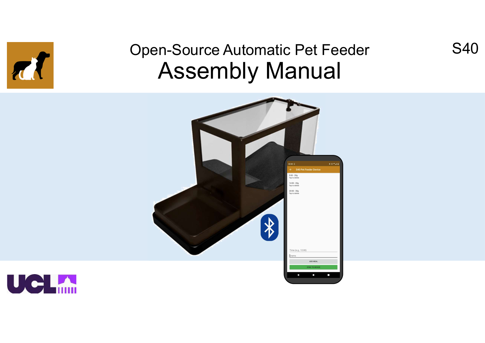

IoT Integrated Pet Feeder
Open Source Design Project — A complete IoT ecosystem featuring real time dispensing scheduling, precise mass control and bluetooth meal programming via an Android client.

01The Brief
The brief of this project was to develop an open-source product for a distinct target market. The product must also focus on a being part of the 'circular economy' principle, ensuring recyclability and repairability. As a group, we settled on pet feeding as our context, the problem statement is defined in the PDF below.
02Design Philosophy
The design philosophy was centered around a very intuitive and open-source design process. Every component and layout was chosen with the intent of the end user either producing it or assembling it themselves (see assembly manual PDF). This prompted us to opt for a breadboard design rather than a PCB due to it being more practical for users to build.
The software and firmware were also developed in a totally open-source fashion. With all code available on GitHub, allowing for user to adjust parameters as appropriate. Another key aspect to the pet-feeder was use of no onboard controls or inbuilt screens, instead making use of the user's mobile phone to program meals. This minimises the e-waste produced.
03Technical Depth & Achievements
We produced a fully functional prototype, with a functional Android app client companion. Portion control was accurate up to 2% of masses in range 20-100g. Timing was accurate with a maximum delay of 2 seconds with minimal drift. The product was tested using real pet food substitutes (skittles!).
05Project Resources & Media
